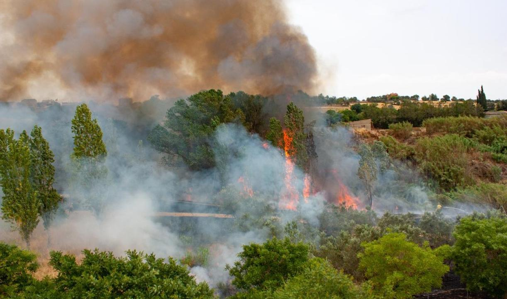
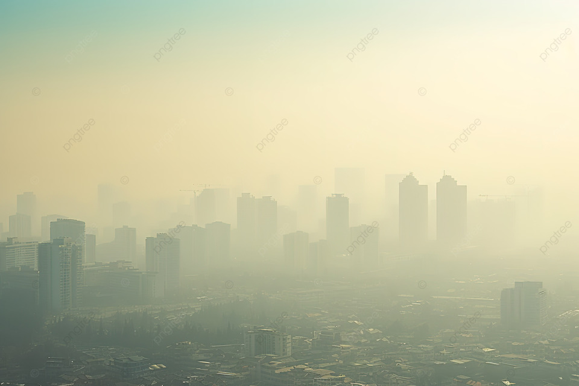
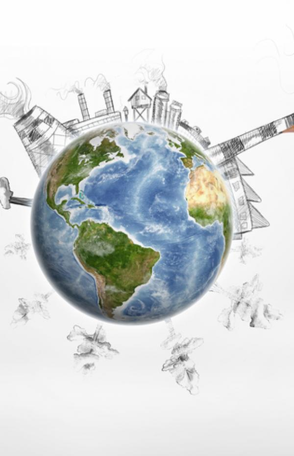
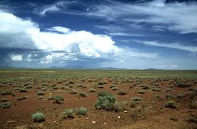
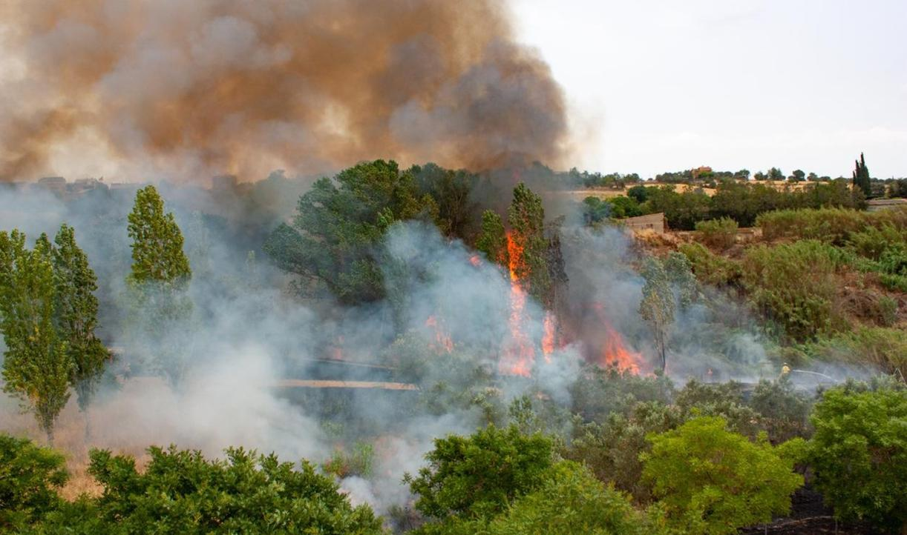
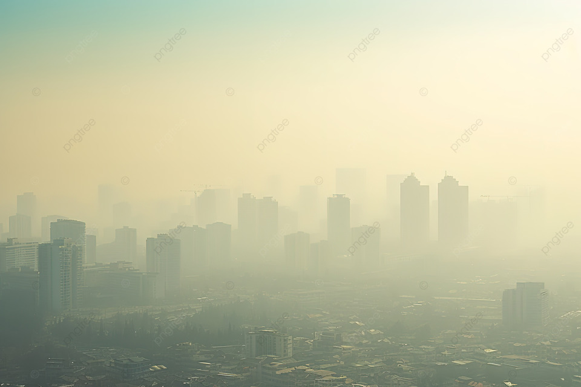
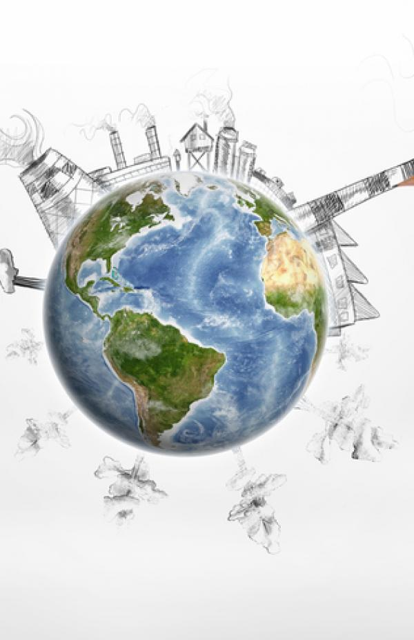
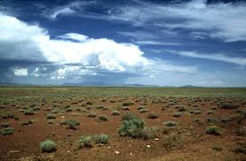

El Frágil Balance de Nuestro Planeta
¿Qué pasa si hay demasiado oxígeno?
El oxígeno es esencial para la vida, pero en exceso puede tener consecuencias inesperadas:
- Mayor riesgo de incendios: Con más oxígeno, los incendios se propagarían más rápido y serían más difíciles de controlar.
- Cambios en los ecosistemas: Algunas especies podrían prosperar mientras otras se verían afectadas negativamente.
- Efectos en la salud humana: Demasiado oxígeno puede causar toxicidad pulmonar y daño celular.
- Oxidación acelerada: Los metales se corroerían más rápidamente y los materiales orgánicos se degradarían antes.
- Modificación climática: Podrían alterarse los patrones atmosféricos y los ciclos biogeoquímicos.
¿Qué pasa si hay demasiada contaminación?
La contaminación excesiva tiene efectos devastadores:
- Cambio climático acelerado: Aumento de temperaturas y eventos climáticos extremos.
- Pérdida de biodiversidad: Muchas especies no pueden adaptarse a los cambios rápidos.
- Problemas de salud pública: Aumento de enfermedades respiratorias y cardiovasculares.
- Alteración de ecosistemas acuáticos: Acidificación de océanos y muerte de especies marinas.
- Deterioro de la calidad del suelo: Reducción de la fertilidad y contaminación de cultivos.
Simulador de Impacto Ambiental
Experimenta cómo diferentes niveles de oxígeno y contaminación afectan al planeta:
Nivel de Oxígeno
- 10-15%: Hipoxia (poco oxígeno)
- 16-25%: Rango normal
- 26-40%: Hiperoxia (mucho oxígeno)
Nivel de Contaminación
- 1-3: Baja contaminación
- 4-6: Contaminación moderada
- 7-10: Contaminación peligrosa
 







¡Ajusta los controles y haz clic en "Simular Escenario" para ver qué podría pasar!
Contaminantes que Dañan el Medio Ambiente
La chatarra electrónica o e-waste incluye dispositivos que, una vez desechados, pueden contaminar el medio ambiente:
- Teléfonos móviles y tablets: Contienen metales pesados y baterías de litio que pueden filtrarse al suelo y agua.
- Computadoras y laptops: Incluyen componentes peligrosos como plomo en soldaduras y mercurio en pantallas.
- Televisores y monitores: Especialmente los modelos más antiguos que contienen plomo en los CRT.
- Impresoras y fotocopiadoras: Contienen cartuchos de tinta y tóner que pueden liberar sustancias químicas nocivas.
- Equipos de audio y video: Contienen plásticos no biodegradables y metales pesados en sus circuitos.
- Electrodomésticos: Neveras, aires acondicionados y otros contienen gases refrigerantes dañinos.
- Dispositivos médicos: Equipos electrónicos de hospitales contienen sustancias peligrosas.

¡Recicla tus dispositivos!
Solo el 20% de los residuos electrónicos se recicla adecuadamente. El resto termina en vertederos contaminando el medio ambiente durante décadas.
Baterías Peligrosas
Una sola batería de móvil puede contaminar 600,000 litros de agua, equivalente al consumo anual de 15 personas.
Componentes Tóxicos
Los circuitos integrados contienen arsénico, cadmio y mercurio que pueden causar daños neurológicos.
Elementos de Red que Dañan el Medio Ambiente
Los dispositivos de red y telecomunicaciones también tienen un impacto ambiental significativo:
- Routers y switches: Consumen energía constantemente y contienen metales pesados en sus circuitos.
- Centros de datos: Requieren enormes cantidades de energía para funcionar y refrigerarse.
- Torres de telefonía móvil: Consumen energía las 24 horas y pueden afectar a la fauna local.
- Cables de red y fibra óptica: Su producción y eliminación genera residuos plásticos y químicos.
- Dispositivos IoT: La proliferación de dispositivos conectados aumenta el consumo energético y los residuos electrónicos.
Empresas que más Contaminan y sus Soluciones
Shell
Una de las mayores compañías petroleras del mundo, responsable de significativas emisiones de CO₂.
- Inversión en energías renovables (eólica, solar, hidrógeno)
- Objetivo de cero emisiones netas para 2050
- Proyectos de captura y almacenamiento de carbono
Chevron
Gigante energético con gran impacto en emisiones de gases de efecto invernadero.
- Inversión en biocombustibles avanzados
- Reducción de emisiones de metano
- Proyectos reforestación
Coca-Cola
Mayor contaminante plástico según auditorías de marca.
- Compromiso de usar 50% de material reciclado en envases para 2030
- Iniciativas de recolección y reciclaje
- Desarrollo de envases biodegradables
Amazon
Gran huella de carbono por logística y centros de datos.
- Compromiso de cero emisiones netas para 2040
- Adquisición de 100,000 vehículos eléctricos para reparto
- Inversión en energías renovables para sus operaciones
Estadísticas Ambientales
Contaminación del Aire
9 de cada 10 personas respiran aire contaminado según la OMS, causando 7 millones de muertes prematuras anuales.
Contaminación del Agua
80% de las aguas residuales se vierten sin tratamiento adecuado, contaminando ríos, lagos y océanos.
Residuos Sólidos
Se generan 2,100 millones de toneladas de residuos anuales, equivalente a 7,000 estadios de fútbol llenos.
Huella de Carbono
La huella de carbono es una medida del impacto que las actividades humanas tienen sobre el medio ambiente, expresada en términos de la cantidad de dióxido de carbono (CO₂) y otros gases de efecto invernadero emitidos. Cada persona en promedio genera 4.8 toneladas de CO₂ al año.
Transporte
20% de las emisiones globales provienen del transporte, siendo los vehículos particulares los mayores contribuyentes. Cada litro de gasolina quemado produce aproximadamente 2.3 kg de CO₂.
Industria
31% de las emisiones globales son generadas por procesos industriales y manufactura de productos. La producción de cemento, acero y plásticos son particularmente intensivas en carbono.
Hogares
12% de las emisiones globales provienen del consumo energético residencial y gestión de residuos domésticos. La calefacción, refrigeración y uso de electrodomésticos son los principales contribuyentes.
Environmental Pollution: Causes and Prevention
Causes of Environmental Pollution
- Industrial emissions: Factories release harmful chemicals and greenhouse gases into the air and water.
- Vehicle exhaust: Cars and trucks emit carbon monoxide, nitrogen oxides, and particulate matter.
- Plastic waste: Single-use plastics accumulate in landfills and oceans, harming wildlife.
- Deforestation: Tree removal reduces air quality and contributes to climate change.
- Agricultural runoff: Pesticides and fertilizers contaminate water sources.
How to Prevent Environmental Pollution
- Reduce, reuse, recycle: Minimize waste and properly dispose of materials.
- Use renewable energy: Switch to solar, wind, or hydroelectric power sources.
- Conserve water: Fix leaks and use water-efficient appliances.
- Choose sustainable transportation: Walk, bike, or use public transit when possible.
- Support eco-friendly products: Purchase items with minimal packaging and low environmental impact.